Project 5: The Power of Diffusion Models
Part A: Diffusion Sampling, Inpainting, and Optical Illusions
Part 0: Setup and Text-to-Image Generation
In this part, we set up the DeepFloyd IF diffusion model and experiment with text-to-image generation using different inference step counts.
Configuration
Random Seed: 100 (used consistently throughout all parts)
Inference Steps Tested: 20 and 50
Text Prompts and Generated Images
We tested three different text prompts with both 20 and 50 inference steps to compare the quality and detail of the generated images.
Prompts Tested
- a photo of a vintage red car
- a sketch of a medieval castle
- an oil painting of a snowy mountain valley
Results Comparison: 20 vs 50 Inference Steps
The following screenshots show the generated images for all three prompts at both inference step counts:
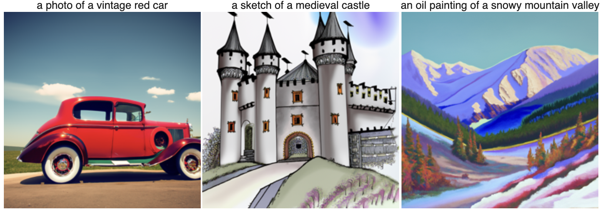
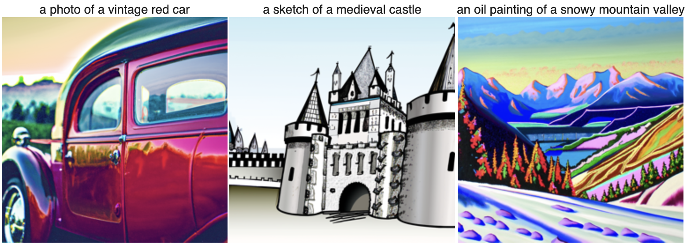
Reflection on Inference Steps
Compared to 20 inference steps, using 50 inference steps produces images that are sharper, more detailed, and more semantically aligned with the text prompts. The 20-step outputs capture the overall structure and concept but exhibit softer edges, lower contrast, and less refined textures. In contrast, the 50-step outputs show clearer object boundaries, richer colors, improved prompt fidelity, and more consistent global structure, reflecting the additional denoising refinements allowed by the diffusion process.
Part 1.1: Implementing the Forward Process
In this part, we implement the forward process which takes a clean image and adds noise to it. The forward process is defined by adding Gaussian noise scaled by the noise coefficients at different timesteps.
Noisy Campanile at Different Noise Levels
Below are the results of applying the forward process to the Berkeley Campanile at noise levels t = [250, 500, 750]:
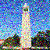
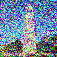
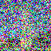
Part 1.2: Classical Denoising
In this part, we attempt to denoise the noisy images using classical Gaussian blur filtering. This demonstrates the limitations of traditional denoising methods compared to diffusion models.
Gaussian Blur Denoising Results
For each of the 3 noisy Campanile images, we show the noisy version (top row) alongside the best Gaussian-denoised version (bottom row):
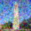
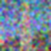
Part 1.3: One-Step Denoising
In this part, we use a pretrained diffusion model (UNet) to denoise images. The UNet predicts the noise in a noisy image, which we can then remove to recover an estimate of the original image.
One-Step Denoising Results
For the 3 noisy images (t = [250, 500, 750]), we show the noisy version (top row) and the one-step denoised estimate (bottom row):
Part 1.4: Iterative Denoising
In this part, we implement iterative denoising, which applies the denoising process multiple times in a strided manner. This produces much better results than single-step denoising, especially for highly noisy images.
Denoising Progression
Below shows the noisy Campanile at different timesteps during the iterative denoising process (every 5th loop):
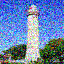
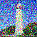
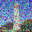
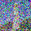
Comparison of Denoising Methods
Below compares the original image with different denoising approaches:

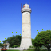
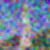
Part 1.5: Diffusion Model Sampling
In this part, we use the iterative_denoise function to generate images from scratch by starting with pure random noise and denoising it. This demonstrates the generative capability of diffusion models.
Sampled Images from "a high quality photo"
Below are 5 images generated by denoising pure noise using the prompt "a high quality photo":
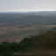
Part 1.6: Classifier-Free Guidance (CFG)
In this part, we implement Classifier-Free Guidance (CFG), which improves image quality by computing both conditional and unconditional noise estimates and combining them. This technique significantly enhances the quality and prompt alignment of generated images.
Sampled Images with CFG
Below are 5 images generated using the prompt "a high quality photo" with a CFG scale of 7:
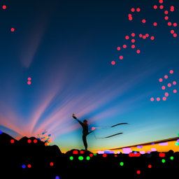
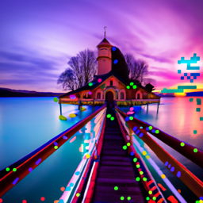
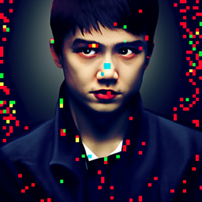
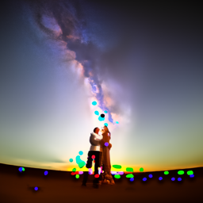
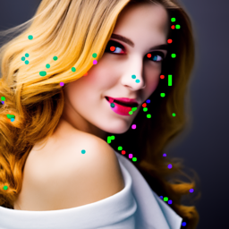
Part 1.7: Image-to-image Translation
In this part, we use the diffusion model to edit existing images by adding noise and then denoising. This allows us to project images onto the natural image manifold and make creative edits.
Part 1.7.1: Editing Hand-Drawn and Web Images
This procedure works particularly well when starting with non-realistic images (e.g., paintings, sketches, scribbles) and projecting them onto the natural image manifold.
Web Image: Sunset
Below shows a web image edited at different noise levels [1, 3, 5, 7, 10, 20] with the original on the right:
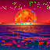
Hand-Drawn Image 1: Plane
Below shows a hand-drawn plane edited at different noise levels [1, 3, 5, 7, 10, 20] with the original on the right:
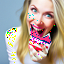
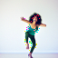
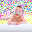
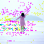
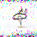
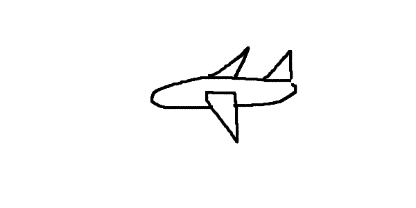
Hand-Drawn Image 2: Table
Below shows a hand-drawn table edited at different noise levels [1, 3, 5, 7, 10, 20] with the original on the right:
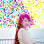
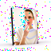
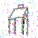
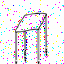
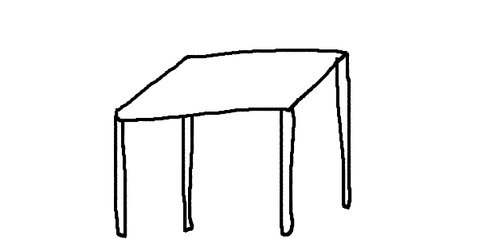
Part 1.7.2: Inpainting
Inpainting allows us to fill in masked regions of an image by using the diffusion model to generate new content that matches the surrounding context.
Inpainting Results
Below shows the Campanile and two custom images with inpainted regions:
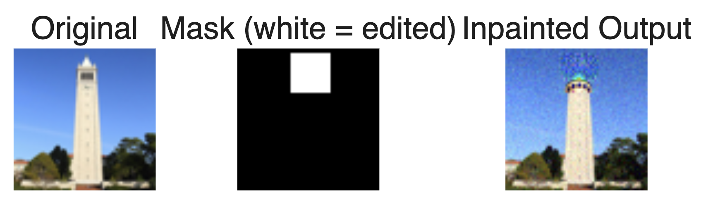
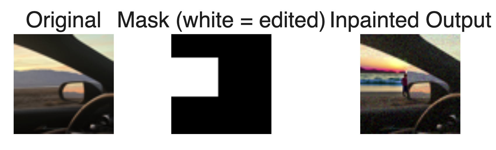
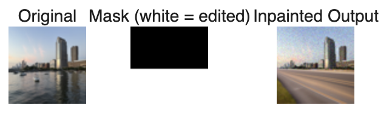
Part 1.7.3: Text-Conditional Image-to-image Translation
In this part, we guide the image projection using text prompts, allowing us to control the style and content of the generated edits.
Campanile with Text Conditioning
Below shows the Campanile edited at different noise levels [1, 3, 5, 7, 10, 20] using text conditioning:
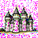
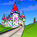
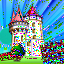
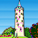
Custom Image 1: Drive
Below shows a custom image edited at different noise levels [1, 3, 5, 7, 10, 20] using text conditioning:
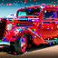
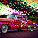
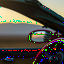
Custom Image 2: NYC
Below shows a custom image edited at different noise levels [1, 3, 5, 7, 10, 20] using text conditioning:
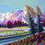
Part 1.8: Visual Anagrams
In this part, we create visual anagrams - images that look like one thing when viewed normally, but reveal a different image when flipped upside down. This is achieved by averaging noise estimates from the diffusion model when processing the image in both orientations with different text prompts.
Illusion 1: Car and Castle
This illusion shows a car when viewed normally, but reveals a castle when flipped upside down (and vice versa):
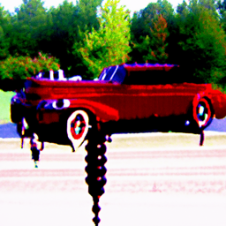
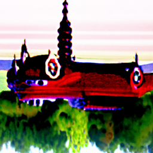
Illusion 2: Jellyfish and Hot Air Balloon
This illusion shows a jellyfish when viewed normally, but reveals a hot air balloon when flipped upside down (and vice versa):
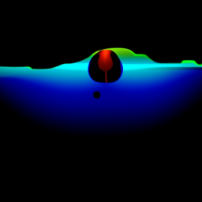
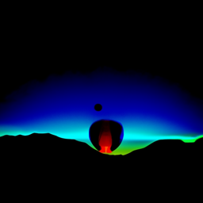
Additional Illusion: Castle and Valley
This illusion shows a castle when viewed normally, but reveals a valley when flipped upside down:
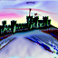
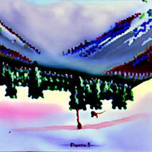
Challenging Pair: Lion and Sunset
Below shows an attempt at creating a visual anagram with a lion and sunset. This combination proved more difficult to achieve a clear illusion:
Note on Difficulty
Creating a visual anagram with a lion and sunset proved challenging. The distinct shapes and orientations of these subjects make it difficult to create a convincing illusion that works well in both orientations. The diffusion model struggles to reconcile these very different visual concepts when averaging the noise estimates.
Part 1.9: Hybrid Images
In this part, we create hybrid images using Factorized Diffusion. Hybrid images combine low frequencies from one image with high frequencies from another, creating images that appear different when viewed from different distances or with different focus.
Hybrid Image Results
Below are hybrid images created by combining noise estimates from different text prompts using low-pass and high-pass filtering:
Part B: Flow Matching from Scratch
In Part B, we train our own flow matching model on MNIST from scratch. We start with a simple single-step denoiser and then progress to iterative flow matching with time and class conditioning.
Part 1: Training a Single-Step Denoising UNet
We begin by building a simple one-step denoiser that maps a noisy image to a clean image using an L2 loss objective.
1.1 Implementing the UNet
We implement a UNet architecture consisting of downsampling and upsampling blocks with skip connections. The architecture uses standard operations including Conv2d, BatchNorm, GELU activations, and ConvTranspose2d for upsampling.
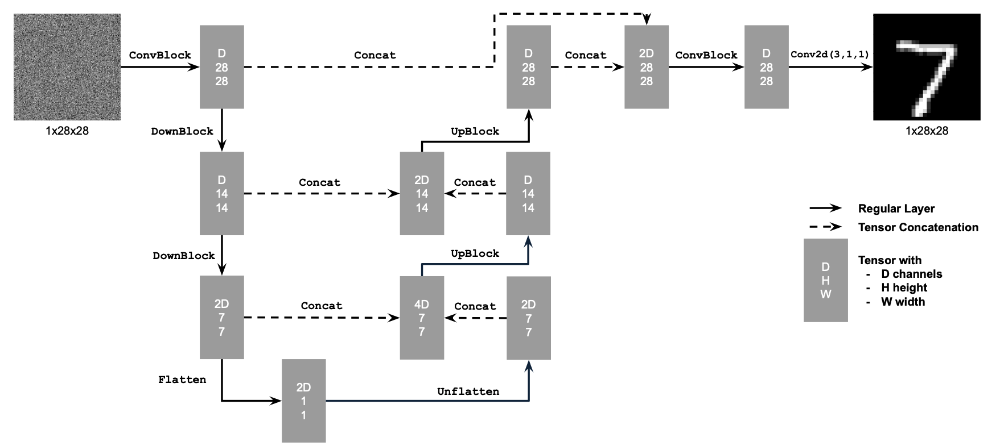

Part 1.2: Using the UNet to Train a Denoiser
Visualization of Noising Process
Visualize the different noising processes over σ:
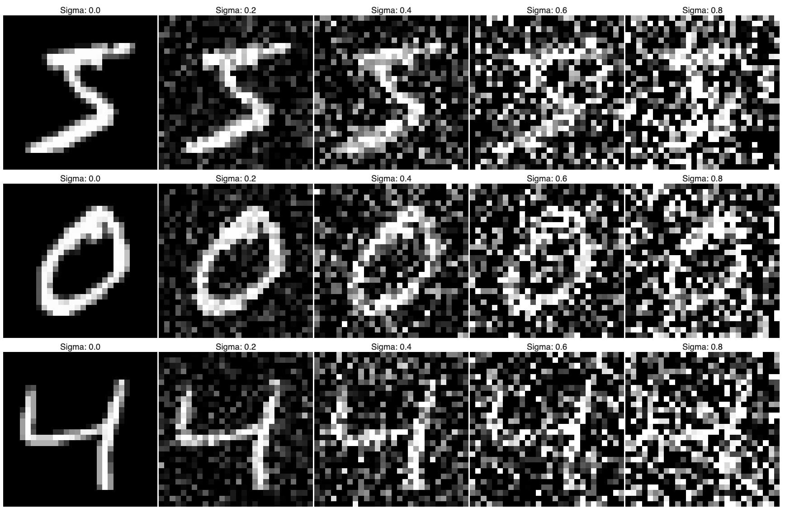
1.2.1 Training
We train the UNet to denoise noisy MNIST images. The training process involves generating noisy images by adding Gaussian noise to clean images and training the model to predict the clean images.
Training Loss Curve
Sample Results
Results on test set digits with noise level 0.5 after the 1st and 5th epoch:
1.2.2 Out-of-Distribution Testing
We test the denoiser on noise levels it wasn't trained on to evaluate generalization:
1.2.3 Denoising Pure Noise
We train the denoiser to map pure Gaussian noise to clean images, treating it as a generative task.
Training Loss Curve
Sample Results
Patterns Observed
When training a denoiser on pure Gaussian noise to predict clean MNIST digits, the model learns to output an "average digit" - a blurry amalgamation of all training examples. This occurs because with MSE loss, the model minimizes the sum of squared distances to all training examples, effectively predicting the centroid or mean of the entire dataset. Since pure noise provides no information about which specific digit to generate, the optimal MSE prediction is the average of all possible outputs. The result is a ghostly, indistinct image that vaguely resembles digit 3, but contains features from all classes blended together. This demonstrates why single-step denoising fails as a generative model - without intermediate steps or conditioning, the network cannot learn to map noise to diverse, realistic samples.
Part 2: Training a Flow Matching Model
2.1 Adding Time Conditioning to UNet
To make the UNet time-aware, we inject the timestep t into the network using FCBlocks (fully-connected blocks). The conditioning signal is embedded and used to modulate intermediate feature maps in the decoder path.


2.2 Training the UNet
We train the time-conditioned UNet by sampling random images, random timesteps, and training the model to predict the flow vector at each timestep.
Training Algorithm

Training Loss Curve
2.3 Sampling from the UNet
We use iterative denoising to sample new digits by repeatedly predicting the flow vector and taking small Euler steps toward the data distribution.
Sampling Algorithm

Sampling Results
Results after 1, 5, and 10 epochs of training:
2.4 Adding Class-Conditioning to UNet
To improve sample quality and enable class-specific generation, we add class-conditioning to the UNet. The class label is embedded as a one-hot vector and combined with time conditioning. We implement classifier-free guidance by dropping the class conditioning 10% of the time during training.
2.5 Training the UNet
We train the class-conditioned UNet using the same procedure as time-only conditioning, with the addition of class labels and periodic unconditional generation.
Training Algorithm

Training Loss Curve
2.6 Sampling from the UNet
We sample with class-conditioning and classifier-free guidance (γ = 1.5) to generate specific digits.
Sampling Algorithm

Sampling Results
Results after 1, 5, and 10 epochs of training, showing 4 instances of each digit:
Removing the Learning Rate Scheduler
We remove the exponential learning rate scheduler while maintaining performance.
Training Loss Curve
Sampling Results
Results after training without the scheduler:
Compensating for the Loss of the Scheduler
To maintain performance without the exponential learning rate scheduler, I made the following compensations:
Reduced initial learning rate: Changed from 1e-3 to 5e-4, providing a more stable learning rate that doesn't require decay to prevent overshooting later in training.
Switched to AdamW optimizer: Replaced Adam with AdamW (weight_decay=0.01), which includes built-in weight regularization that helps prevent overfitting and improves generalization without needing learning rate adjustments.
Extended training duration: Increased from 10 to 15 epochs, allowing the model more time to converge at the constant learning rate since we no longer benefit from the fine-tuning phase that the scheduler provides.
These changes work together: the lower learning rate ensures stable convergence throughout training, AdamW's regularization maintains good generalization, and the additional epochs compensate for the slower but steadier learning process. The results show comparable quality to the scheduler-based approach, demonstrating that careful hyperparameter selection can eliminate the need for complex scheduling.